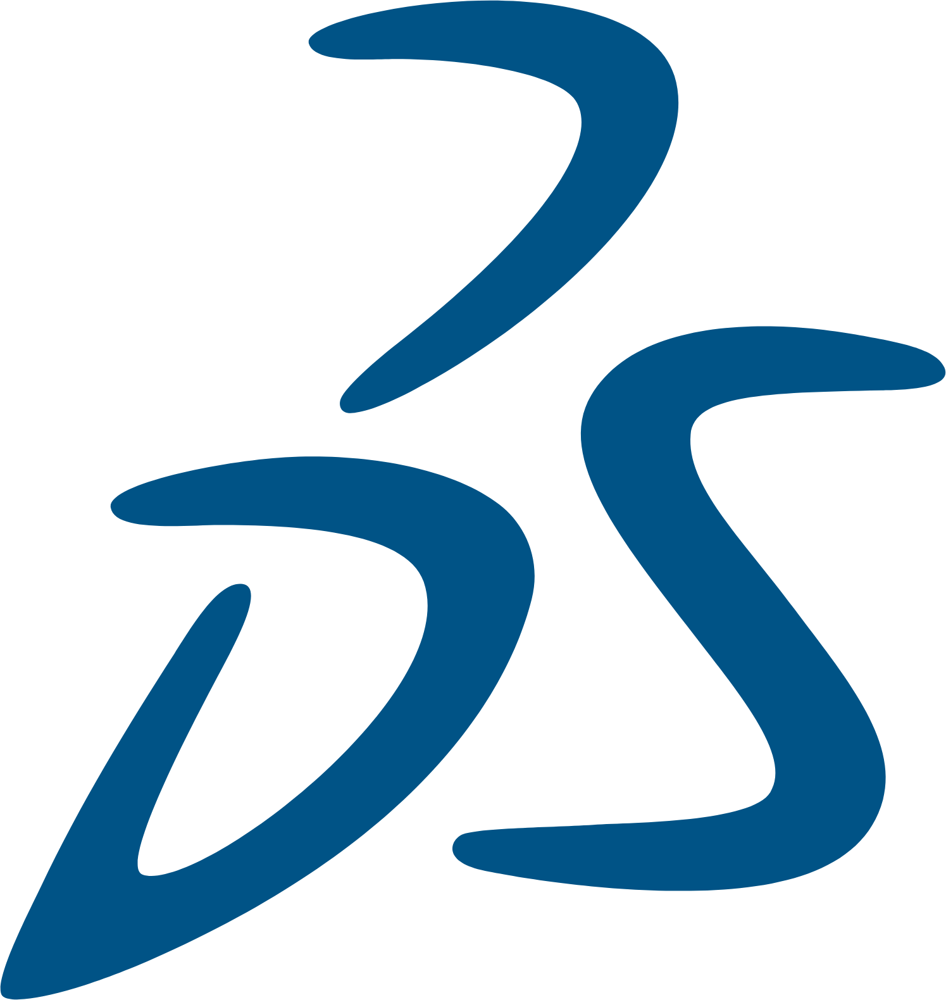
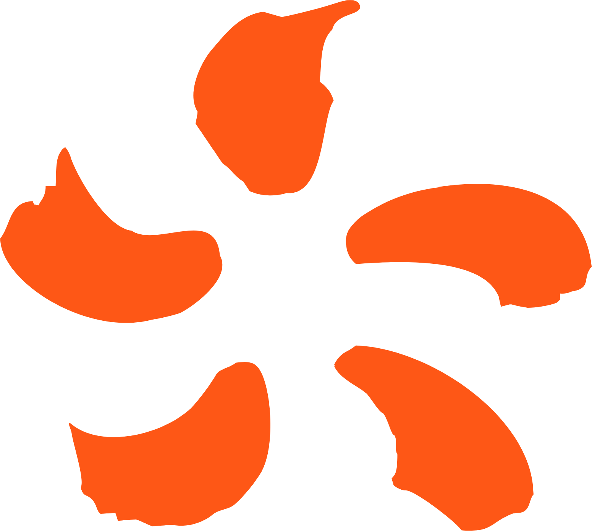
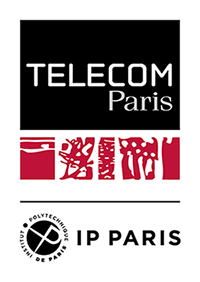
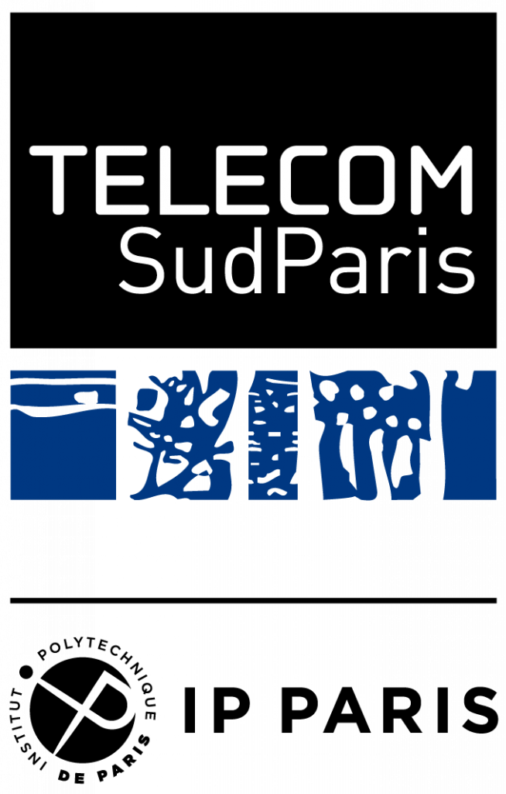
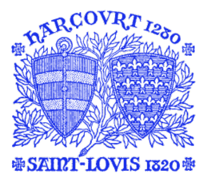

Doctolib
ML Research Engineer
Sep 2025 – Present · Audio ML for Healthcare
- Audio and speech machine learning for healthcare products used by millions of patients and practitioners.

I'm an ML Research Engineer at Doctolib, working on audio machine learning for healthcare. I hold a M.S. in Data Science from École Polytechnique and study AI at Télécom Paris.
My main interests are audio & speech processing, large language models, and computer vision. Whatever the domain, I care deeply about rigor, interpretability, and building things that work outside the lab.
I speak French, English, Albanian, Italian, and some German.
Doctolib
Sep 2025 – Present · Audio ML for Healthcare

Dassault Systèmes
Feb 2025 – Aug 2025 · LLM & AI Agents — ENOVIA

Électricité de France (EDF)
Jul 2024 – Jan 2025 · Anomaly Detection — DOAAT
Master in Data Science
Sep 2024 – Present · Saclay, France
Deep Learning for Time Series, Optimization for Data Science, Statistical Learning Theory, Data Stream Processing

Master in AI
Sep 2025 – Present · Palaiseau, France
Deep Learning, Generative AI, Reinforcement Learning

Computer Science & Data Science
Sep 2022 – Present · Évry, France
Machine Learning, Deep Learning, Reinforcement Learning, Algorithms & Data Structures

Preparatory Classes (CPGE)
Sep 2019 – Sep 2022 · Paris, France
Mathematics & Physics intensive program. Research: Autonomous moon lander using RL.